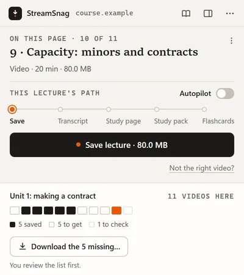
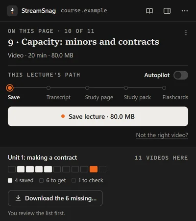

Launching soon. StreamSnag 1.6 is not released yet, and Pro is not on sale yet.Launching soon. 1.6 is not released. Pro is not on sale.
Save your online lectures and actually study from them.
A browser extension that saves the lecture you are watching and, with Pro, transcribes it into something you can read and study.
Unlimited video downloads, free forever. Pro from US$39.97 a year.


StreamSnag transcribes the lecture for you.
Pro turns the speech into text and sets it out as a document you can read, with headings, a contents list and a time beside every paragraph.
No minute limits.
What was said
- so preload first
- preload is the stretch on the
- ventricular muscle cells at the
- end of diastole just before
- contraction
What you read
Three determinants of stroke volume
Lecturer: So, preload first. Preload is the stretch on the ventricular muscle cells at the end of diastole, just before contraction.


A video downloader for your lectures. Free, with no limits.
The video goes to your own folders, with the slides and files on its page. No ads, no account.




Then study it.
With your own AI account, Pro writes a study guide, a practice quiz and flashcards. Your slides stay in step with the recording.


Video downloads are free. Studying is US$39.97 a year.
Try Pro on one whole lecture first, with no card.
Free
US$0
Unlimited video downloads, free forever. Open source, no ads, no nagging.
- Find and save videos: files and streams
- Download all, with a review step
- PDFs and PowerPoint files on the page
Pro
US$39.97 a year
or US$4.99 a month · US$99.95 once
Everything in Free, and the study tools.
- Reading edition
- Transcription, with no minute limits
- Study page, with PowerPoint and PDF slide matching
- Study pack: guide, quiz, flashcards, Anki export
The AI parts run on your own AI account: nothing extra on a Claude or ChatGPT subscription you already have. What the AI costs
Available soonYour first lecture is free, with no card. A full refund within 7 days, no reason needed.
Short answers.
What is StreamSnag?
A browser extension that saves the lecture you are watching and, with Pro, turns it into something to read and study. It runs in Chrome, Edge and Brave on a computer, not in Firefox and not on phones.
Is downloading really free?
Yes. The downloader is free forever and open source, and nothing is held back to sell you Pro. No limits, no ads, no nagging, no account. What the free downloader does.
What does Pro cost, and what does the AI cost?
Pro is US$39.97 a year, US$4.99 a month, or US$99.95 once for life. The first lecture is free from start to finish, with no card.
The study tools that use AI run on your own AI account. With a Claude or ChatGPT subscription you already have there is no extra charge. With a pay-as-you-go key it was between a few cents and about US$1.50 a lecture on our own runs.
Either way it is between you and your AI provider, and never paid to StreamSnag. What the AI costs, measured.
What leaves my computer?
Two things, and only when you start them:
- The text you choose to send to your AI provider: a lecture's transcript and the text on its slides, with the speaker notes when the slides are a PowerPoint file. Slide pictures and the video are never sent.
- Your Pro key, when it is checked with our payment provider.
Downloads come straight from the site you are on to your own folders. The privacy page says exactly what stays and what leaves.
Start with tonight's lecture.
For Chrome, Edge and Brave on a computer.
Get StreamSnag, freeNot released yet. When StreamSnag 1.6 is out, this button will lead to your browser's store.